실제 NMS·U 범위·연속 PnP 과정
모든 사례에서 같은 native-only cached/continuous 쌍을 표시했습니다. 표에는 native+mask control도 포함합니다. 031344와 봉인 점수 후 최대오차·회귀 사례는 진단을 위해 골랐으며 런타임 방법 선택에는 쓰이지 않았습니다.
선·점은 실제 봉인 관측, wire는 저장 모델투영입니다. S 원좌표·U 정밀 코너·참조/GT 자세를 그리지 않았고 새 fitting도 하지 않았습니다. 추가143의 참조는 기존 nominal 주석 PnP이며 독립 실측은 아닙니다. TEST와143은 반복 확인한 탐색 자료입니다. 현재 e 기본값은 이 보고서로 바뀌지 않습니다.
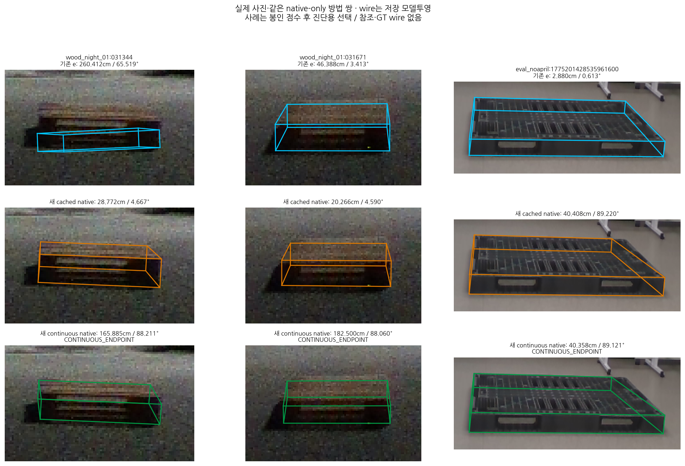
모든 표시 값·원자료·출처 JSON · 기존49 e 처리 과정
wood_night_01:031344
상태: I B B B B B S U
| 방법 | 봉인 참조 오차 |
|---|
| 기존 e | 260.412cm / 65.519° |
| 새 NMS cached·native | 28.772cm / 4.667° |
| 새 NMS cached·native+mask | 38.010cm / 5.371° |
| 새 NMS continuous·native | 165.885cm / 88.211° |
| 새 NMS continuous·native+mask | 38.010cm / 5.371° |
원본 RGB① 초기 모델과 고정 B/I 기록
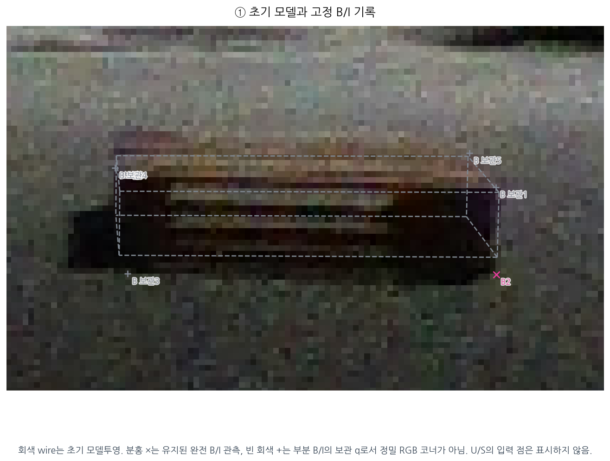
회색 wire는 초기 모델투영. 분홍 ×는 유지된 완전 B/I 관측, 빈 회색 +는 부분 B/I의 보관 q로서 정밀 RGB 코너가 아님. U/S의 입력 점은 표시하지 않음.
② 실제 마스크·모든 NMS 선 대안
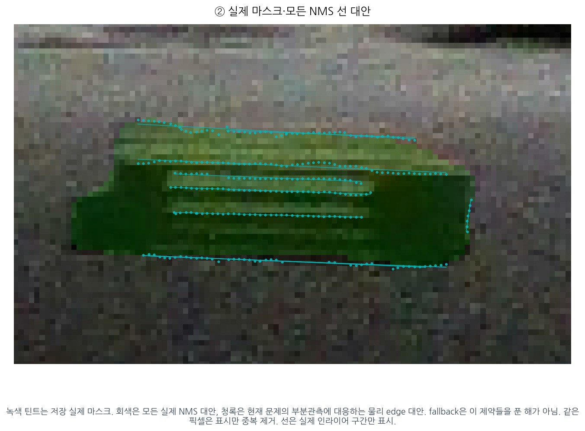
녹색 틴트는 저장 실제 마스크. 회색은 모든 실제 NMS 대안, 청록은 현재 문제의 부분관측에 대응하는 물리 edge 대안. fallback은 이 제약들을 푼 해가 아님. 같은 픽셀은 표시만 중복 제거. 선은 실제 인라이어 구간만 표시.
③ O/U 및 기존 접선 범위
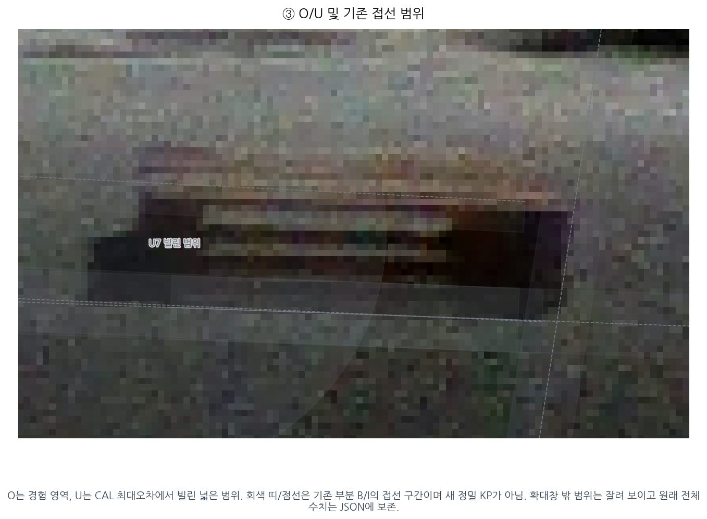
O는 경험 영역, U는 CAL 최대오차에서 빌린 넓은 범위. 회색 띠/점선은 기존 부분 B/I의 접선 구간이며 새 정밀 KP가 아님. 확대창 밖 범위는 잘려 보이고 원래 전체 수치는 JSON에 보존.
④ 기존 e 저장 모델
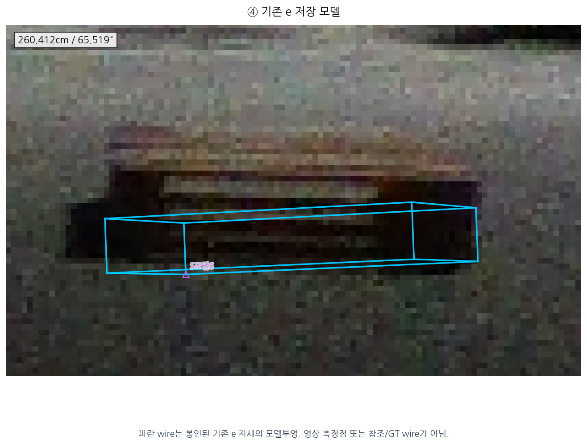
파란 wire는 봉인된 기존 e 자세의 모델투영. 영상 측정점 또는 참조/GT wire가 아님.
⑤ 새 cached native 선택 모델
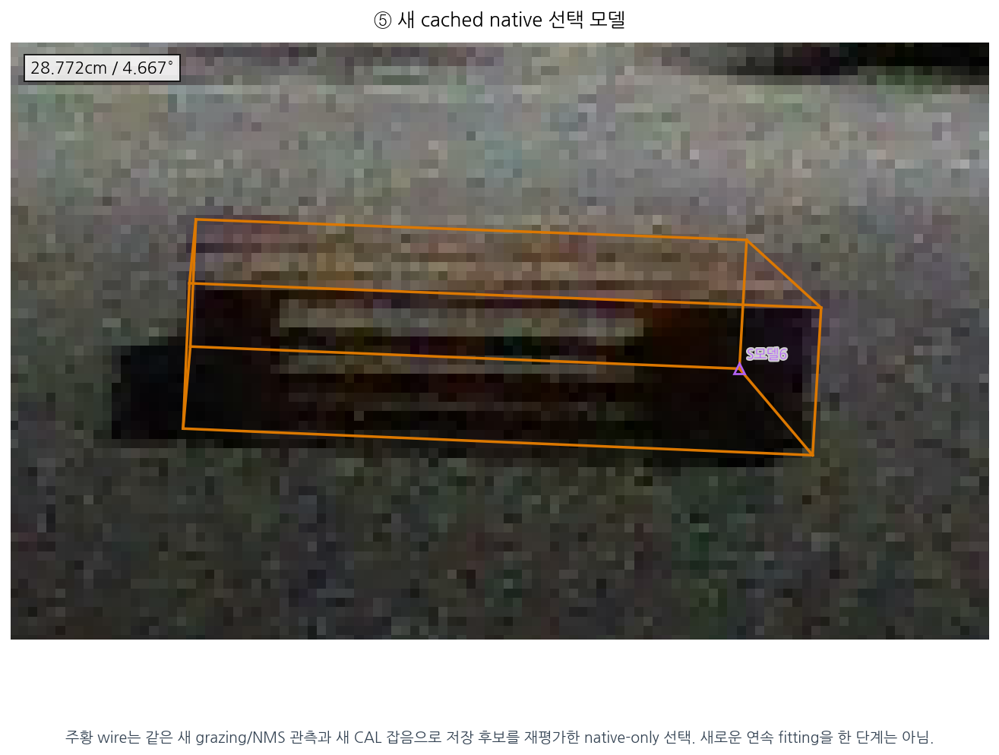
주황 wire는 같은 새 grazing/NMS 관측과 새 CAL 잡음으로 저장 후보를 재평가한 native-only 선택. 새로운 연속 fitting을 한 단계는 아님.
⑥ continuous native 풀 선택 모델
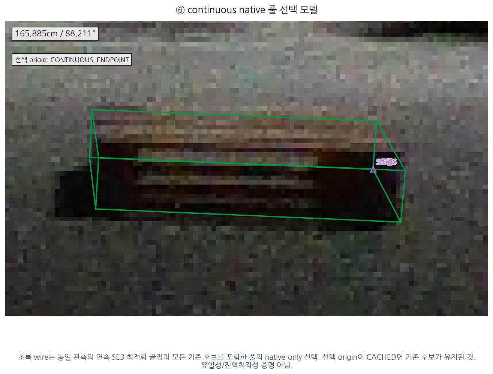
초록 wire는 동일 관측의 연속 SE3 최적화 끝점과 모든 기존 후보를 포함한 풀의 native-only 선택. 선택 origin이 CACHED면 기존 후보가 유지된 것. 유일성/전역최적성 증명 아님.
wood_night_01:031671
상태: B U B U B B S S
| 방법 | 봉인 참조 오차 |
|---|
| 기존 e | 46.388cm / 3.413° |
| 새 NMS cached·native | 20.266cm / 4.590° |
| 새 NMS cached·native+mask | 32.678cm / 3.090° |
| 새 NMS continuous·native | 182.500cm / 88.060° |
| 새 NMS continuous·native+mask | 32.678cm / 3.090° |
원본 RGB① 초기 모델과 고정 B/I 기록
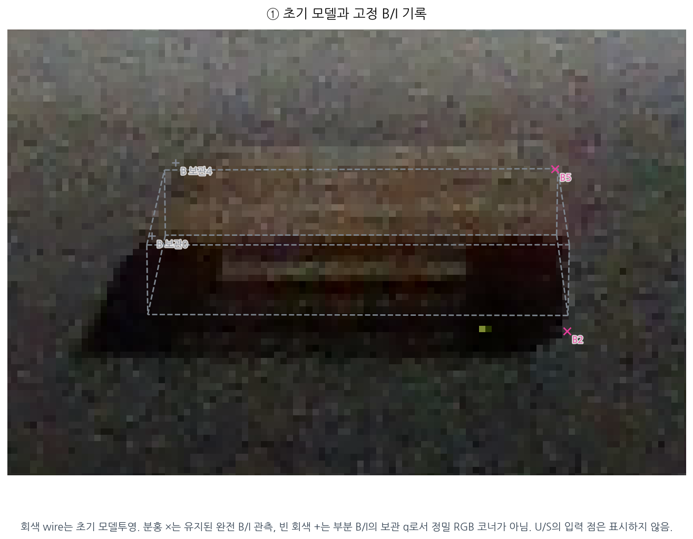
회색 wire는 초기 모델투영. 분홍 ×는 유지된 완전 B/I 관측, 빈 회색 +는 부분 B/I의 보관 q로서 정밀 RGB 코너가 아님. U/S의 입력 점은 표시하지 않음.
② 실제 마스크·모든 NMS 선 대안
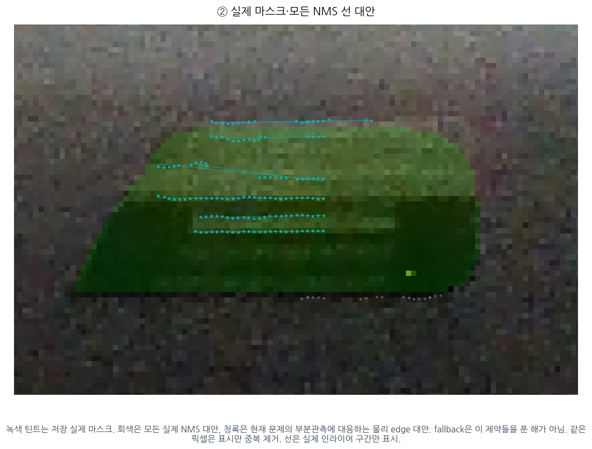
녹색 틴트는 저장 실제 마스크. 회색은 모든 실제 NMS 대안, 청록은 현재 문제의 부분관측에 대응하는 물리 edge 대안. fallback은 이 제약들을 푼 해가 아님. 같은 픽셀은 표시만 중복 제거. 선은 실제 인라이어 구간만 표시.
③ O/U 및 기존 접선 범위
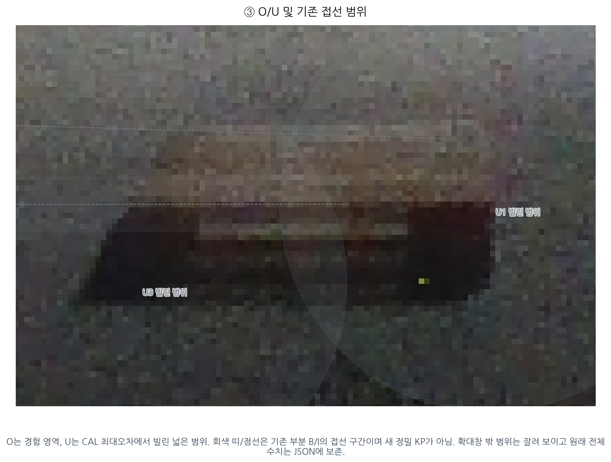
O는 경험 영역, U는 CAL 최대오차에서 빌린 넓은 범위. 회색 띠/점선은 기존 부분 B/I의 접선 구간이며 새 정밀 KP가 아님. 확대창 밖 범위는 잘려 보이고 원래 전체 수치는 JSON에 보존.
④ 기존 e 저장 모델
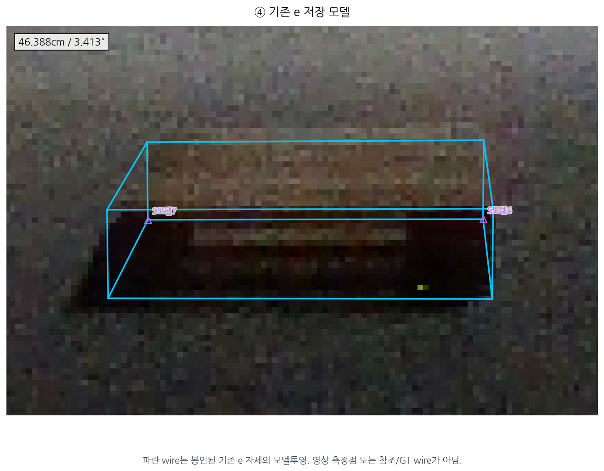
파란 wire는 봉인된 기존 e 자세의 모델투영. 영상 측정점 또는 참조/GT wire가 아님.
⑤ 새 cached native 선택 모델
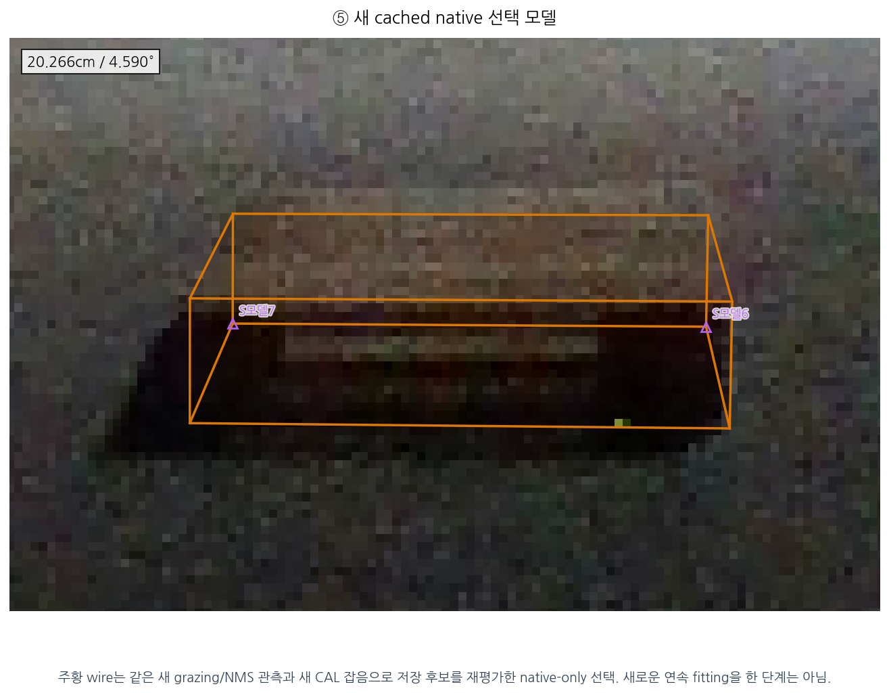
주황 wire는 같은 새 grazing/NMS 관측과 새 CAL 잡음으로 저장 후보를 재평가한 native-only 선택. 새로운 연속 fitting을 한 단계는 아님.
⑥ continuous native 풀 선택 모델
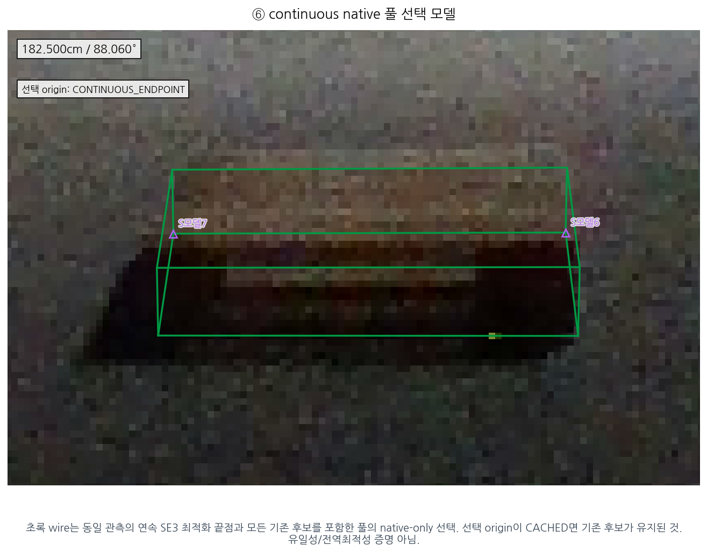
초록 wire는 동일 관측의 연속 SE3 최적화 끝점과 모든 기존 후보를 포함한 풀의 native-only 선택. 선택 origin이 CACHED면 기존 후보가 유지된 것. 유일성/전역최적성 증명 아님.
eval_noapril:1775201428535961600
상태: B B B B B U S U
| 방법 | 봉인 참조 오차 |
|---|
| 기존 e | 2.880cm / 0.613° |
| 새 NMS cached·native | 40.408cm / 89.220° |
| 새 NMS cached·native+mask | 40.398cm / 89.270° |
| 새 NMS continuous·native | 40.358cm / 89.121° |
| 새 NMS continuous·native+mask | 40.398cm / 89.270° |
원본 RGB① 초기 모델과 고정 B/I 기록
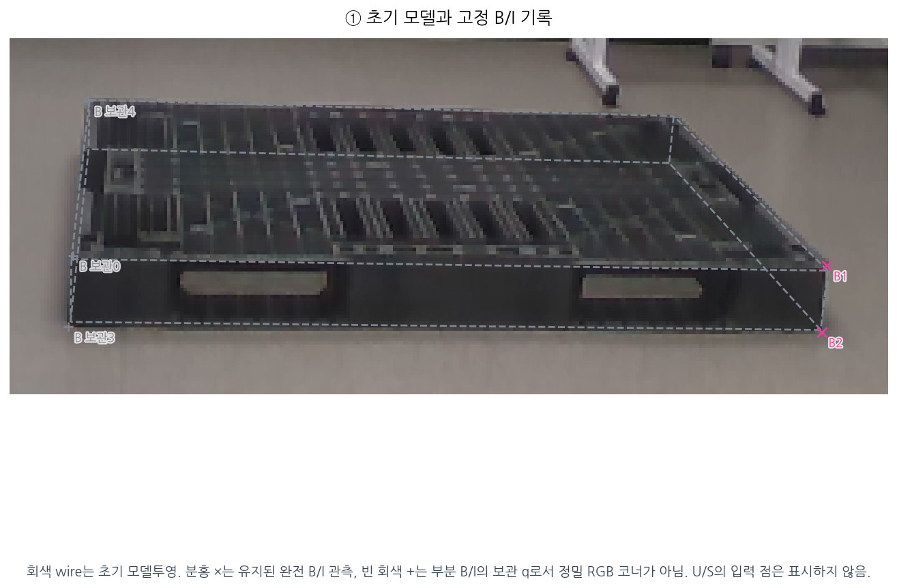
회색 wire는 초기 모델투영. 분홍 ×는 유지된 완전 B/I 관측, 빈 회색 +는 부분 B/I의 보관 q로서 정밀 RGB 코너가 아님. U/S의 입력 점은 표시하지 않음.
② 실제 마스크·모든 NMS 선 대안
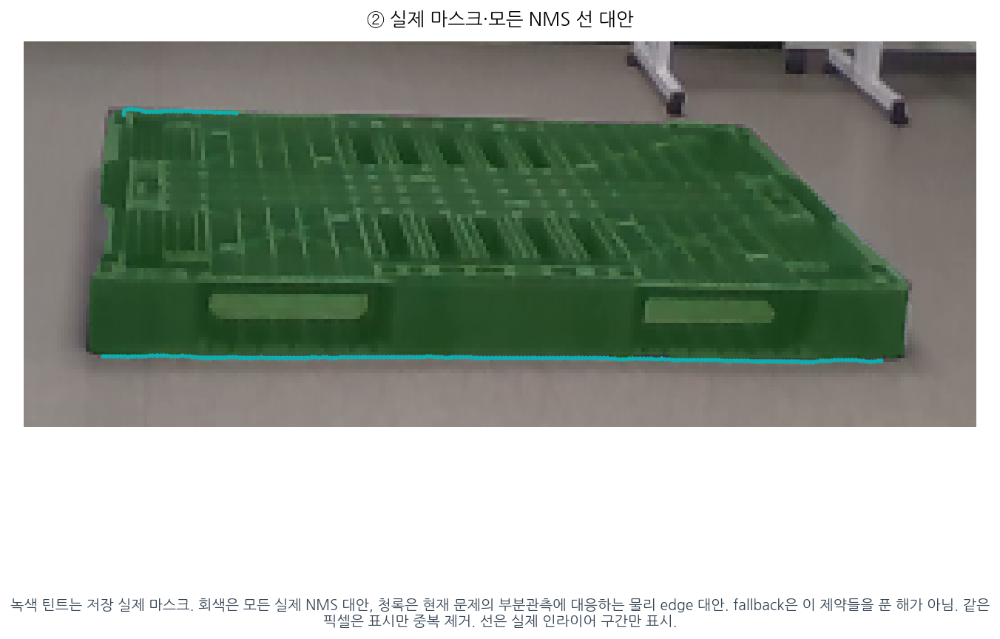
녹색 틴트는 저장 실제 마스크. 회색은 모든 실제 NMS 대안, 청록은 현재 문제의 부분관측에 대응하는 물리 edge 대안. fallback은 이 제약들을 푼 해가 아님. 같은 픽셀은 표시만 중복 제거. 선은 실제 인라이어 구간만 표시.
③ O/U 및 기존 접선 범위
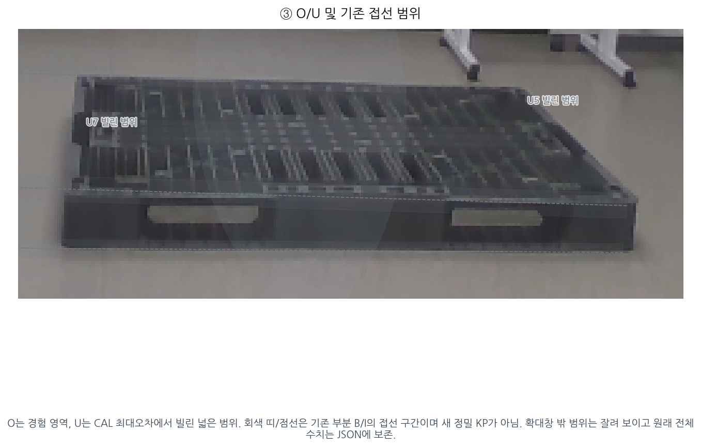
O는 경험 영역, U는 CAL 최대오차에서 빌린 넓은 범위. 회색 띠/점선은 기존 부분 B/I의 접선 구간이며 새 정밀 KP가 아님. 확대창 밖 범위는 잘려 보이고 원래 전체 수치는 JSON에 보존.
④ 기존 e 저장 모델
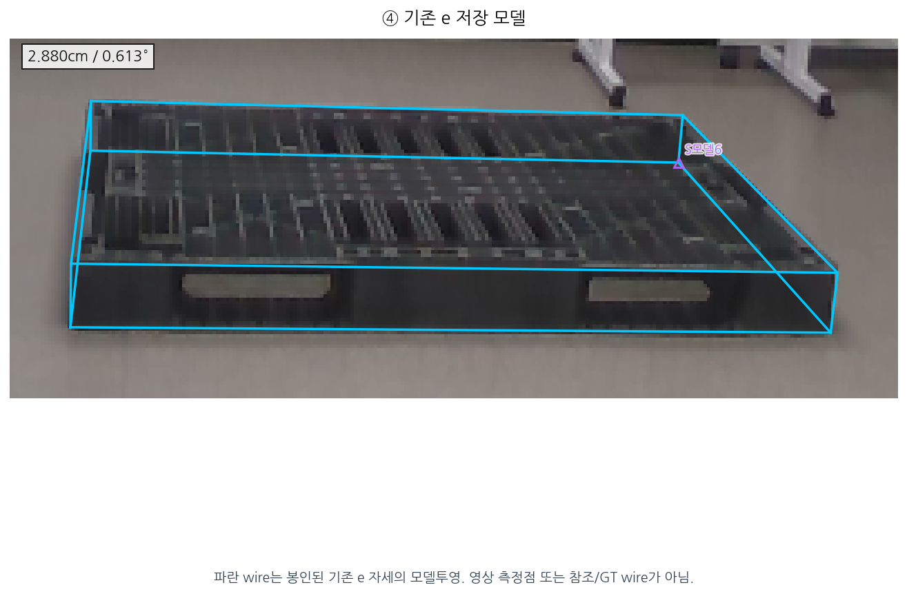
파란 wire는 봉인된 기존 e 자세의 모델투영. 영상 측정점 또는 참조/GT wire가 아님.
⑤ 새 cached native 선택 모델
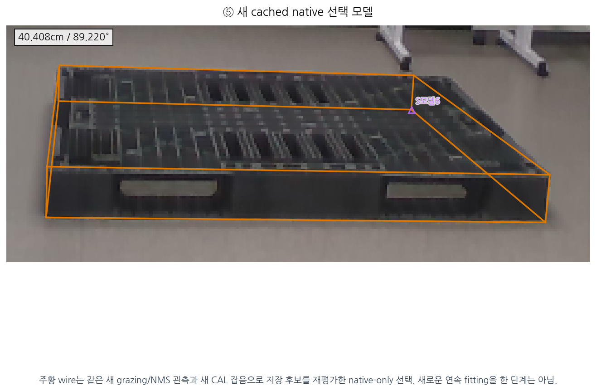
주황 wire는 같은 새 grazing/NMS 관측과 새 CAL 잡음으로 저장 후보를 재평가한 native-only 선택. 새로운 연속 fitting을 한 단계는 아님.
⑥ continuous native 풀 선택 모델
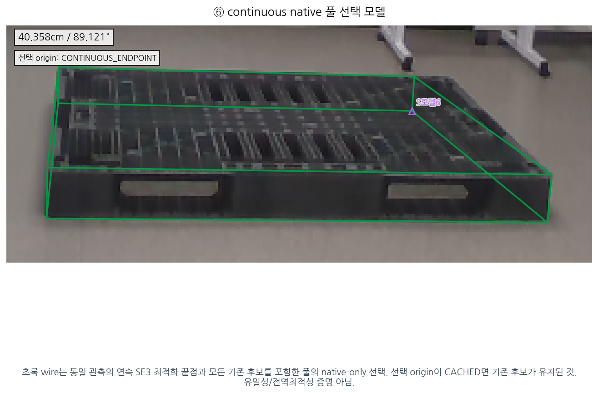
초록 wire는 동일 관측의 연속 SE3 최적화 끝점과 모든 기존 후보를 포함한 풀의 native-only 선택. 선택 origin이 CACHED면 기존 후보가 유지된 것. 유일성/전역최적성 증명 아님.